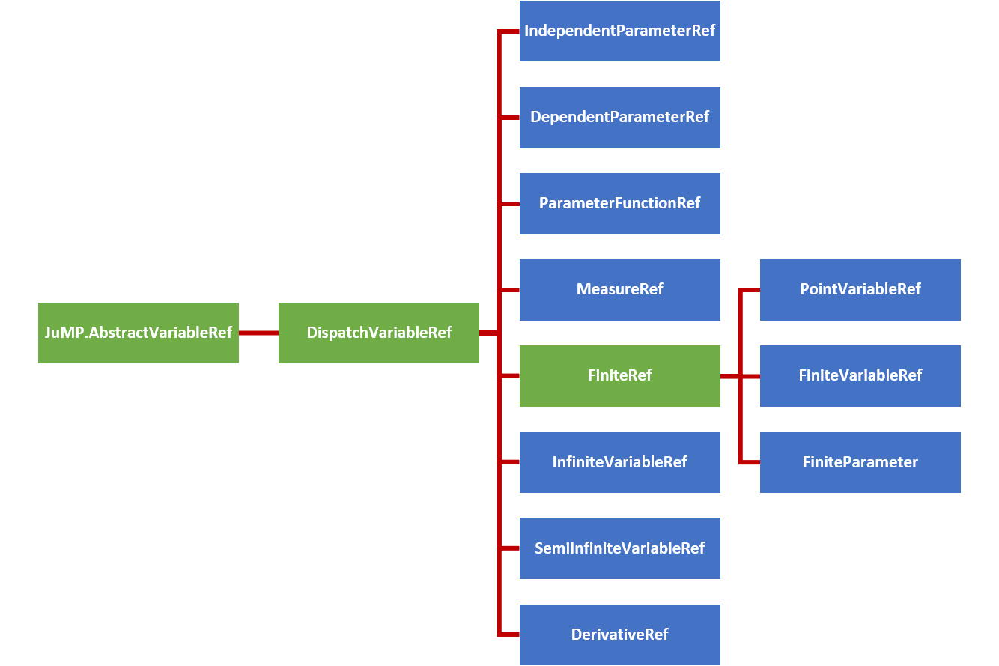

Expressions
A guide for the defining and understanding the variable expressions used in InfiniteOpt. See the technical manual for more details.
Nonlinear objects as defined by JuMP.@NL[macro_name] are not currently supported by InfiniteOpt. See Nonlinear Expressions for more information and possible workarounds.
Overview
Expressions in InfiniteOpt (also called functions) refer to mathematical statements involving variables and numbers. Thus, these comprise the mathematical expressions used that are used in measures, objectives, and constraints. Programmatically, InfiniteOpt simply extends JuMP expression types and methods principally pertaining to affine and quadratic mathematical expressions. A natively supported abstraction for general nonlinear expressions is planned for development since that of JuMP is not readily extendable.
Parameter Functions
As described further below, InfiniteOpt.jl only supports affine and quadratic expressions in its current rendition. However, there several use cases where we might want to provide a more complex known function of infinite parameter(s) (e.g., nonlinear setpoint tracking). Thus, we provide parameter function objects that given a particular realization of infinite parameters will output a scalar value. Note that this can be interpreted as an infinite variable that is constrained to a particular known function. This is accomplished via @parameter_function or parameter_function and is exemplified by defining a parameter function f(t) that uses sin(t):
julia> using InfiniteOpt;
julia> model = InfiniteModel();
julia> @infinite_parameter(model, t in [0, 10]);
julia> @parameter_function(model, f == sin(t))
f(t)Here we created an parameter function object, added it to model, and then created a Julia variable f that serves as a GeneralVariableRef that points to it. From here we can treat f as a normal infinite variable and use it with measures, derivatives, and constraints. For example, we can do the following:
julia> @variable(model, y, Infinite(t));
julia> df = deriv(f, t)
∂/∂t[f(t)]
julia> meas = integral(y - f, t)
∫{t ∈ [0, 10]}[y(t) - f(t)]
julia> @constraint(model, y - f <= 0)
y(t) - f(t) ≤ 0.0, ∀ t ∈ [0, 10]We can also define parameter functions that depend on multiple infinite parameters even use an anonymous function if prefer:
julia> @infinite_parameter(model, x[1:2] in [-1, 1]);
julia> @parameter_function(model, myname == (t, x) -> t + sum(x))
myname(t, x)In many applications, we may also desire to define an array of parameter functions that each use a different realization of some parent function by varying some additional positional/keyword arguments. We readily support this behavior since parameter functions can be defined with additional known arguments:
julia> @parameter_function(model, pfunc_alt[i = 1:3] == t -> mysin(t, as[i], b = 0))
3-element Vector{GeneralVariableRef}:
pfunc_alt[1](t)
pfunc_alt[2](t)
pfunc_alt[3](t)The main recommended use case for parameter_function is that it is amendable to defining complex anonymous functions via a do-block which is useful for applications like defining a time-varied setpoint:
julia> setpoint = parameter_function(t, name = "setpoint") do t_supp
if t_supp <= 5
return 2.0
else
return 10.2
end
end
setpoint(t)Please consult the following links for more information about defining parameter functions: @parameter_function and parameter_function.
Beyond this, there are number of query and modification methods that can be employed for parameter functions and these are detailed in the technical manual Section below.
Variable Hierarchy
Expressions employ variable reference types inherited from JuMP.AbstractVariableRef to form expression objects. InfiniteOpt uses a hierarchy of such types to organize the complexities associated with modeling infinite dimensional programs. The figure below summarizes this hierarchy of variable reference types where the abstract types are depicted in green and the concrete types are shown blue.

In consistently with JuMP expression support, GeneralVariableRef exists as a variable reference type that is able to represent any of the above concrete subtypes of DispatchVariableRef. This allows the expression containers to be homogeneous in variable type. This is a paradigm shift from previous versions of InfiniteOpt that used the hierarchy of types directly to construct expressions. This behavior led to stability and performance limitations and thus a has been discontinued.
However, the variable hierarchy is still used to create for variable methods. To accomplish this appropriate GeneralVariableRef dispatch methods are implemented (which are detailed in User Methods section at the bottom of this page) that utilize dispatch_variable_ref to create the appropriate concrete subtype of DispatchVariableRef and call the appropriate underlying method. These dispatch methods have been implemented for all public methods and the underlying methods are what are documented in the method manuals throughout the User Guide pages.
Affine Expressions
An affine expression pertains to a mathematical function of the form:
\[f_a(x) = a_1x_1 + ... + a_nx_n + b\]
where $x \in \mathbb{R}^n$ denote variables, $a \in \mathbb{R}^n$ denote coefficients, and $b \in \mathbb{R}$ denotes a constant value. Such expressions, are prevalent in any problem than involves linear constraints and/or objectives.
In InfiniteOpt, affine expressions can be defined directly using Julia's arithmetic operators (i.e., +, -, *, etc.) or using @expression. For example, let's define the expression $2y(t) + z - 3t$ noting that the following methods are equivalent:
julia> @infinite_parameter(model, t in [0, 10])
t
julia> @variable(model, y, Infinite(t))
y(t)
julia> @variable(model, z)
z
julia> expr = 2y + z - 3t
2 y(t) + z - 3 t
julia> expr = 2 * y + z - 3 * t
2 y(t) + z - 3 t
julia> expr = @expression(model, 2y + z - 3t)
2 y(t) + z - 3 t
julia> typeof(expr)
GenericAffExpr{Float64, GeneralVariableRef}Notice that coefficients to variables can simply be put alongside variables without having to use the * operator. Also, note that all of these expressions are stored in a container referred to as a GenericAffExpr which is a JuMP object for storing affine expressions.
Where possible, it is preferable to use @expression for defining expressions as it is much more efficient than explicitly using the standard operators.
GenericAffExpr objects contain 2 fields which are:
constant::CoefTypeThe constant value of the affine expression.terms::OrderDict{VarType, CoefType}A dictionary mapping variables to coefficients.
For example, let's see what these fields look like in the above example:
julia> expr.terms
OrderedCollections.OrderedDict{GeneralVariableRef, Float64} with 3 entries:
y(t) => 2.0
z => 1.0
t => -3.0
julia> expr.constant
0.0Notice that the ordered dictionary preserves the order in which the variables appear in the expression.
More information can be found in the documentation for affine expressions in JuMP.
Quadratic Expressions
A quadratic function pertains to a mathematical function of the form:
\[f_q(x) = a_1x_1^2 + a_2 x_1 x_2 + ... + a_m x_n^2 + f_a(x)\]
where $x \in \mathbb{R}^n$ are the variables, $f_a(x): \mathbb{R}^n \mapsto \mathbb{R}$ is an affine function, and $m = n(n+1)/2$ is the number of unique combinations of variables $x$. Like affine expressions, quadratic expressions can be defined via Julia's arithmetic operators or via @expression. For example, let's define $2y^2(t) - zy(t) + 42t - 3$ using the following equivalent methods:
julia> expr = 2y^2 - z * y + 42t - 3
2 y(t)² - z*y(t) + 42 t - 3
julia> expr = @expression(model, 2y^2 - z * y + 42t - 3)
2 y(t)² - y(t)*z + 42 t - 3
julia> typeof(expr)
GenericQuadExpr{Float64, GeneralVariableRef}Again, notice that coefficients need not employ *. Also, the object used to store the expression is a GenericQuadExpr which is a JuMP object used for storing quadratic expressions.
GenericQuadExpr object contains 2 data fields which are:
aff::GenericAffExpr{CoefType,VarType}An affine expressionterms::OrderedDict{UnorderedPair{VarType}, CoefType}A dictionary mapping quadratic variable pairs to coefficients.
Here the UnorderedPair type is unique to JuMP and contains the fields:
a::AbstractVariableRefOne variable in a quadratic pairb::AbstractVariableRefThe other variable in a quadratic pair.
Thus, this form can be used to store arbitrary quadratic expressions. For example, let's look at what these fields look like in the above example:
julia> expr.aff
42 t - 3
julia> typeof(expr.aff)
GenericAffExpr{Float64, GeneralVariableRef}
julia> expr.terms
OrderedCollections.OrderedDict{UnorderedPair{GeneralVariableRef}, Float64} with 2 entries:
UnorderedPair{GeneralVariableRef}(y(t), y(t)) => 2.0
UnorderedPair{GeneralVariableRef}(y(t), z) => -1.0Notice again that the ordered dictionary preserves the order.
Polynomial expressions can be represented by introducing dumby variables and nested quadratic/affine expressions. For instance, $z^3 + 2$ can be expressed by introducing a dumby variable $x = z^2$:
julia> @variable(model, x)
x
julia> @constraint(model, x == z^2)
-z² + x = 0.0
julia> expr = @expression(model, z * x + 2)
z*x + 2More information can be found in the documentation for quadratic expressions in JuMP.
Nonlinear Expressions
General nonlinear expressions as generated via JuMP.@NLexpression, JuMP.@NLobjective, and/or JuMP.@NLconstraint macros in JuMP are not currently for InfiniteOpt. This is because JuMP does not readily support nonlinear extensions. However, a fundamental overhaul is planned to resolve this problem (check the status on GitHub).
Workarounds
In the meantime, this limitation can often be overcome by reformulating the problem formulation.
One common case involves expressions that entail integer powers that are greater than 2. This can readily be remedied by adding placeholder variables. For example, consider the expression $z^2x - 3z$. We can reformulate by introducing $z' = z^2$:
julia> @variable(model, z_squared)
z_squared
julia> @constraint(model, z_squared == z^2)
-z² + z_squared = 0.0
julia> @expression(model, z_squared * x - 3z)
z_squared*x - 3 zWe can also reformulate for a variety of nonlinear function types:
| Function | Example | Reformulation Method |
|---|---|---|
| Square Root | $\sqrt{z}$ | Make a squared reformulation variable |
| Indicator | $\mathbb{1}_{z \geq \alpha}$ | Use JuMP's indicator constraint syntax |
| Indicator | $\mathbb{1}_{z \geq \alpha}$ | Replace with big-M constraints (reference) |
| Max/Min | $\max(z, a)$ | Linear programming cuts or big-m constraints (reference) |
In other cases, it may be possible to use a formulation that uses vector constraints. For example, it might be possible to model your problem using semi-definite and/or conic constraints.
Also note that any nonlinearites that only involve infinite parameters (i.e., no decision variables) are enabled via parameter functions. See Parameter Functions for more information.
For problems that cannot be readily reformulated, JuMP can be used directly. In this case the user will need to first transform the formulation into a finite representation (e.g., discretize it).